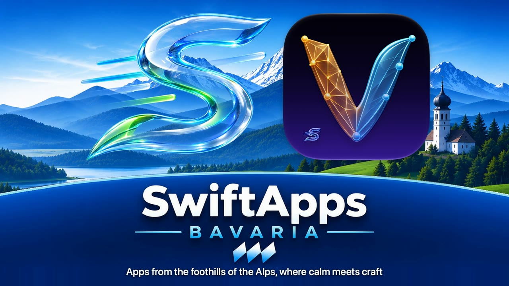
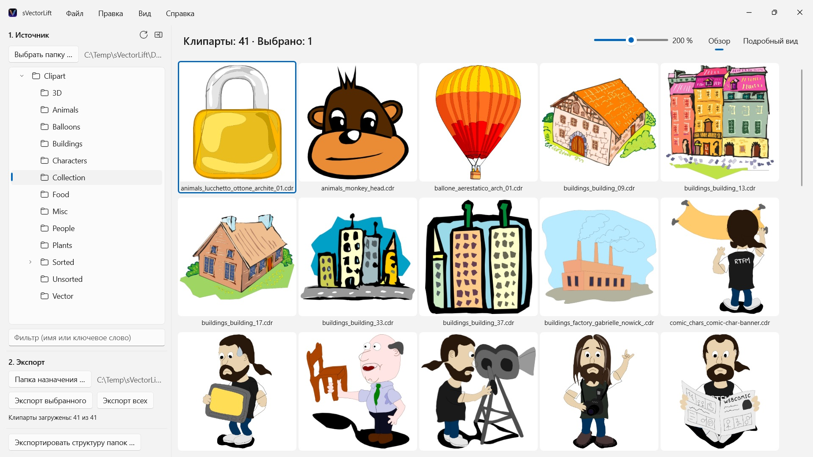
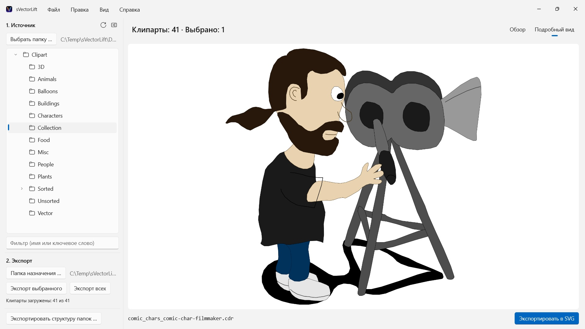

sVectorLift
Открывает CorelDRAW 6–9 (.cdr), CMX включая CDRX, WMF, CGM, QuickDraw 3D и SVG
Тысячи винтажных клипартов на дисках CorelDRAW заперты в форматах, которые почти никакие программы уже не открывают. sVectorLift показывает целые коллекции с первого взгляда и превращает их в настоящие SVG для сегодняшней работы.

Смотреть фильм – 3 мин. на YouTube, на английском с русскими субтитрами

Где-то на полке лежит диск с клипартом, купленный много лет назад. Файлы на месте — но почти никакая программа на вашем ПК их уже не открывает, и ещё меньше программ покажут вам всю коллекцию с первого взгляда.
Поддерживаемые языки (25): Deutsch · English · Español · Français · Italiano · Nederlands · Português (Brasil) · Português (Portugal) · Svenska · Norsk · Suomi · Polski · Čeština · Hrvatski · Magyar · Română · Türkçe · Русский · Українська · فارسی · ไทย · 日本語 · 한국어 · 简体中文 · 繁體中文
Приложение следует языку интерфейса Windows.
sVectorLift возвращает эту графику в работу. Он заново собирает каждый рисунок как настоящий SVG: чёткий в любом размере, редактируемый, готовый к работе в Illustrator, Affinity, Inkscape, Figma — или на вашем сайте. Не просто чтобы снова смотреть. Чтобы снова работать. Именно это значит «lift» в названии: винтажная векторная графика, поднятая до уровня сегодняшних инструментов.
ЧТО ОН ОТКРЫВАЕТ
- Документы CorelDRAW (.cdr), версии с 6 по 9
- Corel Binary Meta File (.cmx) — включая ранний вариант CDRX, который другие программы читать отказываются
- Windows Metafile (.wmf)
- Computer Graphics Metafile (.cgm)
- QuickDraw 3D Metafile (.3dm, .3dmf) — отрисовываются как изображение
- Scalable Vector Graphics (.svg) — показываются напрямую
Многие файлы с расширением .cdr на самом деле вовсе не документы CorelDRAW, а CMX — именно на этом и спотыкаются обычные конвертеры. sVectorLift читает и то, и другое.
sVectorLift сделан для коллекций клипарта: рисунки, символы, иллюстрации. Это не программа вёрстки, и она не берётся воспроизводить многостраничные буклеты и макеты для печати.
НАСТОЯЩЕЕ ВЕКТОРНОЕ ПРЕОБРАЗОВАНИЕ
Здесь не переснимают миниатюру предпросмотра. sVectorLift читает сам рисунок: контуры и кривые Безье, заливки, градиенты, обводки и штриховые линии, узорные и текстурные заливки, встроенные фотографии и текстовые объекты. На выходе — подлинные векторные данные, которые можно масштабировать, перекрашивать и править, а не картинка рисунка.
Чисто растровые изображения экспортируются как PNG, чтобы ничего не потерялось.
Нужно изображение вместо векторной графики? «Экспортировать в PNG» и «Экспортировать в JPG» превращают любой рисунок в изображение, включая файлы SVG, — в размере, который вы задали в разделе «Параметры».
ПРОСМОТР КОЛЛЕКЦИИ
- Дерево папок по всей коллекции, вместе с вложенными папками
- Сетка чётких векторных миниатюр с плавной регулировкой размера
- Детальный просмотр, листание папки стрелками
- Фильтр по имени или ключевому слову
- Множественный выбор как в проводнике: щелчок, Ctrl+щелчок, Shift+щелчок, рамка выделения, Ctrl+A
- Открытие отдельного файла прямо из проводника («Открыть с помощью» или двойной щелчок)
- Недавние папки помнят, где вы остановились: вложенную папку и выбранный файл
- Экспорт выбранного или всей папки за один шаг
- Преобразование целых структур папок вместе с вложенными папками за один раз — структура сохраняется в папке назначения
- Переименование, показ в проводнике, перемещение в корзину
- Упорядочивание коллекции перетаскиванием на папку в дереве — по правилам проводника: Ctrl копирует, Shift перемещает, отмена через Ctrl+Z; в том числе в проводник и из него
БЫСТРО И БЕРЕЖНО К ВАШЕМУ ПК
Миниатюры считаются только для того, что вы действительно видите, — в фоне и с кэшем. Большие папки открываются сразу, а не замирают на минуты, обрабатывая тысячи файлов.
Всё остаётся на вашем ПК. Никаких сетевых соединений, никаких учётных записей, никакого сбора данных.
CorelDRAW — товарный знак Corel Corporation. sVectorLift — независимая программа, не связанная с Corel и не одобренная ею.
- Требуется Windows 11 или новее
- 24 языка
- Поддержка: SwiftAppsBavaria@gmx.net
- Политика конфиденциальности